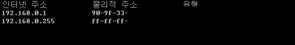
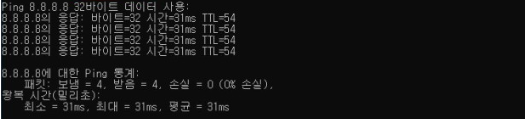
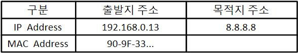
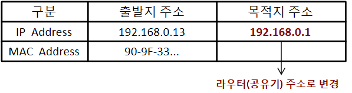
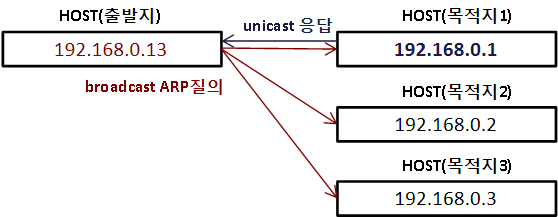
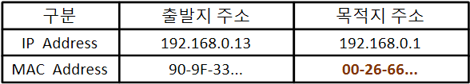
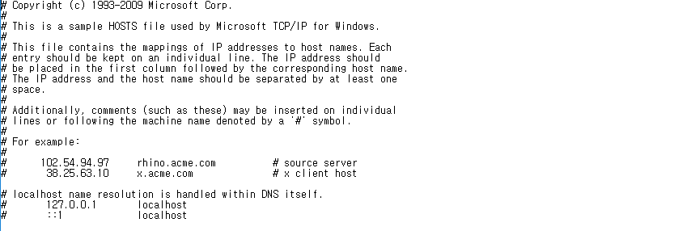
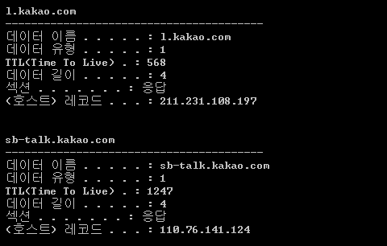

* 개인적인 공부 내용을 기록하는 용도로 작성한 글 이기에 잘못된 내용을 포함하고 있을 수 있습니다.
출처 : 해킹 입문자를 위한 TCP/IP 이론과 보안 2/e
#1 ARP 캐시테이블
#2 ping 8.8.8.8 분석
#3 DNS 캐시테이블
#1 ARP 캐시테이블
ARP(Address Resolution Protocol)는 IP주소와 맥주소 사이를 연결해 주는 기능을 수행하는 중요한 프로토콜이다.
cmd창에 arp-a 명령어를 치면 아래와 같이 IP주소와 맥 주소의 대응 관계를 저장한 테이블이 출력되는데, ARP 캐시 테이블(ARP Cache Table)이라고 부른다. 이는 마치 IP주소와 도메인 네임의 관계를 관리하는 DNS서비스와 유사한 형태이다.

ping 8.8.8.8 명령어를 입력한 뒤 동작 과정에 대해 살펴보자. 여기서 8.8.8.8은 구글에서 운영중인 퍼블릭 DNS이며, ping은 출발지 호스트와 목적지 호스트 사이에서 회선의 연결 상태 혹은 운영체제의 동작 여부 등을 점검할 때 사용되는 명령어로 일정한 크기의 패킷(32byte)를 보내어 상대 컴퓨터가 응답하는지 여부를 점검하는 명령어이다.

위 실행 결과는 ping 명령어를 이용해 출발지 주소 192.168.0.xx에서 목적지 주소 8.8.8.8 로 32byte 패킷을 보냈고 목적지 주소에서는 이를 수신하여 다시 전송했다는 뜻이다.
#2 ping 8.8.8.8 분석
ping 8.8.8.8 명령어를 실행 시 운영체제가 수행하는 동작에 대해 자세하게 정리해 보도록 하겠다.
명령어를 실행하면 운영체제는 자신이 사용하는 서브넷 마스크를 갖고 출발지 IP주소와 목적지 IP주소를 설정한 뒤 네트워크 ID를 비교한다.

출발지 IP주소(192.168.0)와 목적지 IP주소(8.8.8)의 네트워크 ID는 다르기에 서로 다른 LAN영역에 존재한다는 의미이다.
따라서 상이한 LAN영역에 존재하는 목적지로 데이터를 전송하기 위해서는 목적지 IP 주소를 라우터 IP 주소로 변경하여 라우터를 이용해 통신을 진행해야만 한다.

목적지 IP 주소가 구글 DNS 서버 (8.8.8.8)에서 게이트웨이 주소(192.168.0.1)로 변경되었다. 이제 게이트 웨이(공유기)와 스위칭 통신을 하기 위해 MAC 주소를 알아 내어야 한다. 목적지 MAC 주소를 알아 내기 위해서 출발지 호스트는 자기와 동일한 네트워크 ID를 사용하는 모든 호스트 즉, 동일한 LAN영역에 존재하는 호스트에게 브로드캐스트(broadcast)방식을 이용해 패킷을 보낸다.
192.168.0 네트워크 ID를 가진 LAN영역의 호스트들은 브로드 캐스트 질의를 받고 게이트 웨이(공유기)는 자신을 호출한 다는 것을 알아차린 뒤 자신을 호출한 출발지 주소를 향해 유니캐스트(unicast)방식을 사용해 데이터를 전송한다.

* 브로드캐스트(broadcast) : 동일 네트워크ID를 사용하는 호스트에게 모두 데이터를 전송하는 방식
* 유니캐스트(unicast) : 특정한 호스트에게 데이터를 전송하는 방식

ARP 케시테이블에 목적지 주소의 MAC주소가 올라왔으니 출발지 주소에서 목적지 주소로 스위치 통신을 이용해 핑 데이터를 전송한다. 그 후로는 게이트 웨이와 원래 보내고자 했었던 목적지 주소 (구글의 DNS 주소 8.8.8.8)로 라우팅 통신을 이용해 데이터를 전송한다.
#3 DNS 캐시테이블
ARP 캐시테이블이 IP주소와 MAC주소의 대응 관계를 나타내는 테이블 이었다면, DNS 캐시테이블은 IP주소와 도메인 네임의 대응 관계를 나타내어 주는 테이블이다.
PC사용자가 도메인 네임을 입력하면 운영체제는 다음 경로에서 도메인 네임에 대응하는 IP주소를 검색한다.
C:\Windows\System32\drivers\etc\hosts

hosts 폴더 내에 해당하는 도메인 네임이 없다면 OS는 DNS 캐시테이블에서 해당 도메인의 대응하는 IP주소를 검색한다.
DNS 캐시테이블을 출력하는 명령어는 ipconfig/displaydns이다.

만약 DNS 캐시테이블에 조차 도메인 네임이 없다면 OS는 해당하는 로컬 DNS 서버로 도메인 네임에 대한 질의를 요청한다. 예를들어 구글 사이트의 경우에는 8.8.8.8 IP로 질의를 요청한다. 로컬 DNS 서버로 부터 IP 주소에 대한 정보를 응답 받았다면 DNS 캐시테이블에 저장한다.
혹은 DNS 캐시테이블의 정보를 삭제하고 싶다면 ipconfig/flushdns 명령어를 사용하면 된다.